Settings → Harry changes (Chances, After you pass)
Joystick: he takes a touch before shooting
Harry changes → Chances: New, After you pass: Joystick
Real shots: the camera follows the move, no jumps
Real shots test page, any shot
1 · THE ARCADE PACK
A new texture pack. It has the normal pitch, plus the Arcade pop banners and the Arcade sounds. Every other pack keeps the old banner and old sounds.
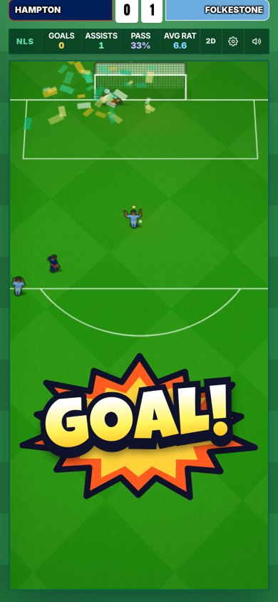
GOAL! in a real match. It goes to the half where the ball isn't.
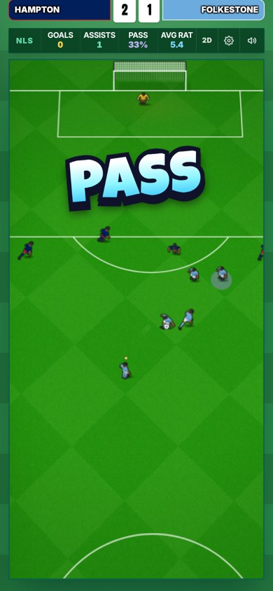
PASS. Smaller than GOAL!, so a goal feels bigger.
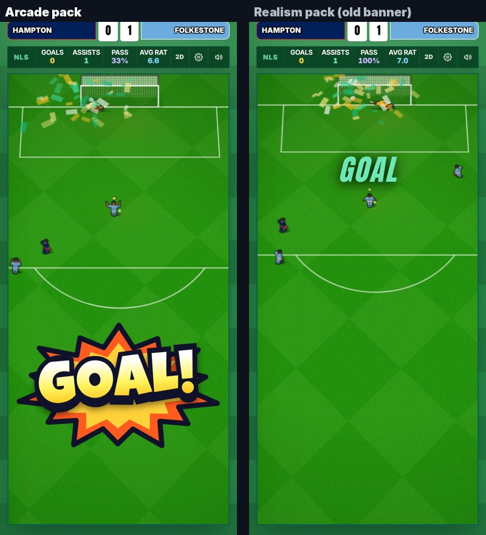
Same moment: Arcade pack vs another pack.
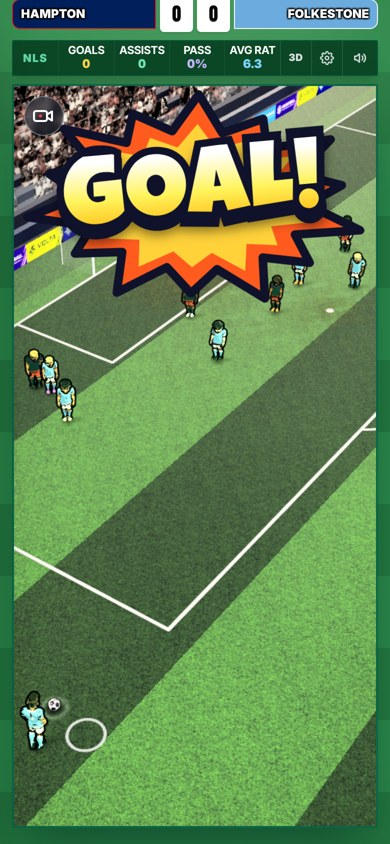
GOAL! in the 3D view, above the play.
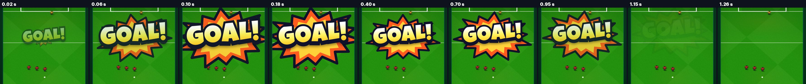
GOAL! frame by frame: it pops up big, settles, floats up and fades.
Also fixed with it: a banner never swaps words in place, never wraps onto two lines, and fades out if half time, full time or the scores come up.
Listen to the Arcade sounds
Your notes, done: menu tap deeper, Stadium's confirm, pass and goal clearly different, crowd turned down.
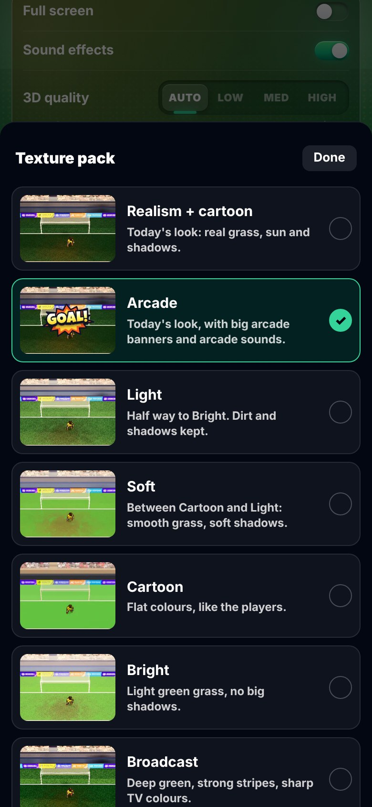
The pack list, with Arcade's own picture.
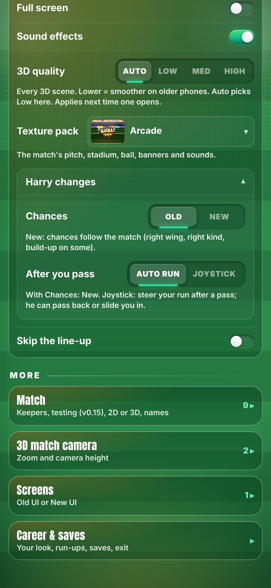
Settings: "Harry changes" open. (The yellow box is a first-time tip.)
2 · "HARRY CHANGES" DROPDOWN
Your switches now live in one closed dropdown in Settings and in the match ⚙: Chances (Old | New) and After you pass (Auto run | Joystick). Texture packs stay outside it.
3 · JOYSTICK: HE SLOWS DOWN AND THINKS
After your pass, the team-mate takes a touch and looks up for about a second. He only hits it first time if the shot is really on. Otherwise he carries it, passes back to you, or plays you through.
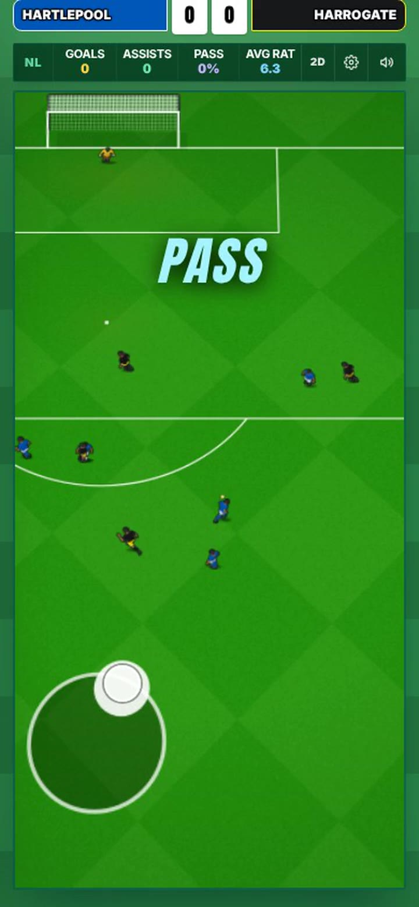
He takes a touch and looks up.
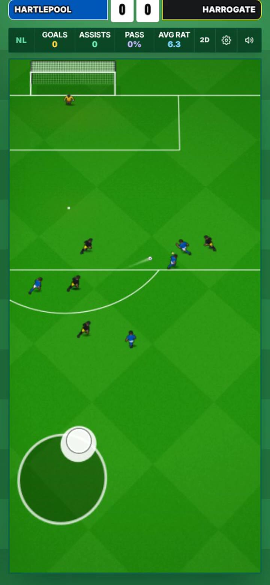
No shot on, so he plays you through.
Auto run plays exactly as before. One side effect: team-mates score a bit more from your passes (35 → 39 in 100).
4 · REAL SHOTS: A CAMERA YOU CAN FOLLOW
Before, the camera chased the ball, jumped across the pitch, and sometimes sat on an empty corner. Now it moves like a TV camera: it looks a little ahead, keeps the ball and the next man in view, and glides onto your chance with no jump.
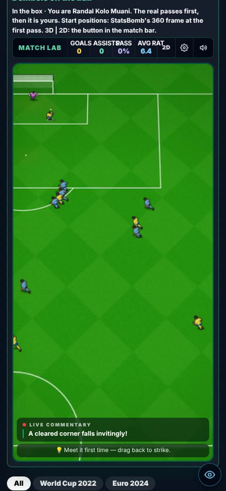
Before: the camera had just jumped to another part of the pitch.
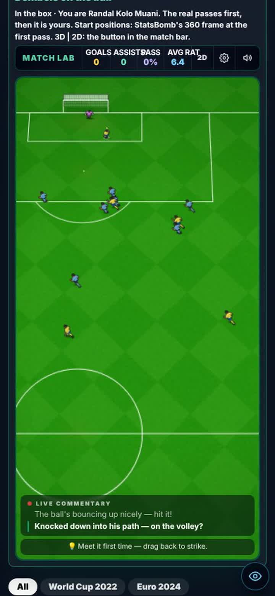
Now: same shot. The goal, the box and the players are all in view.
Frame by frame, before vs now
Top two rows are before, bottom two are now.
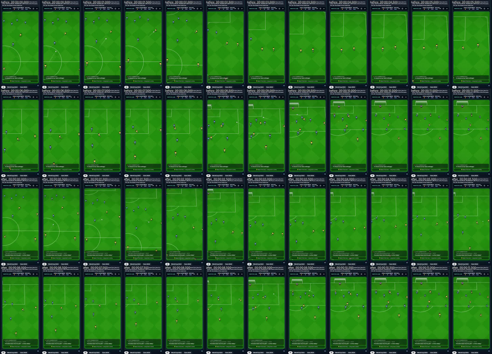
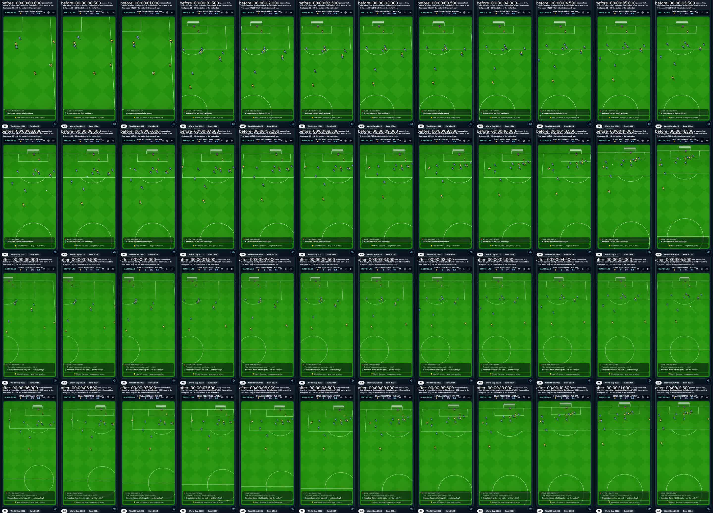
KNOWN ISSUES
Real shots: players a little small in the build-up your call
About 83% of their size in your chance, so long passes stay in shot. They can be full size, but long passes would then leave the picture more often.
Arcade GOAL! in 3D overlaps the camera button
Taps still go through it.
Not seen yet
SAVED! and BACK TO YOU in a real match (drawn on the trial screen only). A first-time finish in Joystick (measured only). Any sound on a real phone.
7 older test failures not from this round
They fail the same way on the live game (keepers, chances, Wembley 3D).
YOUR CALLS
Merge Harry → main your merge
Everything above, plus the two v0.54 patch-notes pages.
Real shots players: full size? yes / no
My answer: no, keep long passes in shot.
Joystick only in some situations? open
Your message cut off at "not every situation calls for the joystick". One option: no joystick when he can shoot first time anyway.
The numbers, if you want them
Joystick (381 test passes): your pass → his shot or pass 1.09 s → 1.67 s. Time on the ball when no shot is on 0.46 s → 1.01 s. First time when the shot is on 17% → 100%; when it isn't 14% → 0%; from outside the box 20% → 0%.
Real shots (5 films): player size in the build-up 17–28 px → 21–35 px (your chance 25–41). Biggest slide in one frame 9–21 px → 2–12 px. Ball hidden at the screen edge or behind commentary up to 27% → 0%. Over 2,010 moves: ball out of view 12.7% → 0.3% of frames.
Arcade banners: GOAL! 74% of the pitch width (92% at its peak); PASS and SAVED! 54–55%. On screen: PASS 0.7 s, SAVED 0.9 s, ASSIST 1.1 s, GOAL 1.3 s. Fades in 0.18 s if the screen changes.
Arcade sounds: tap centre 10,600 Hz → 348 Hz, 0% hiss (was 98%). Pass 130 Hz, goal 1,243 Hz. Crowd 5.3 dB quieter than option A. Confirm is the Stadium one, unchanged.
Previous versions
v0.54 — 14 Oct 2026 (new chances, 3D camera, build-ups that play on): new chances follow the match; corner camera stops at 60°; no more black players in Bright/Light; real shots and full match test pages; build-ups play on with no cut; menus open on the tap; texture packs dropdown with pictures; dribbles as a chance; 12 texture packs; After you pass: Auto run | Joystick. Still open from it: cameras on some 2D/3D chances.